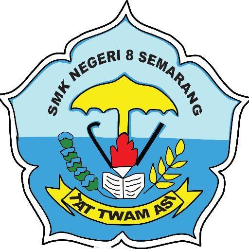

Proposal Wolu Class

Bab 1
Pendahuluan
Puji Syukur kita panjatkan kepada Tuhan yang Maha Esa yang telah memberikan rahmatnya sehingga kami bisa menyelesaikan Proposal ‘Wolu Classroom’ Adapun proposal ini dibuat dengan tujuan dan manfaatnya sebagai acuan untuk membuat
proyek yang telah kami persiapkan sebelumnya. Terima kasih kami ucapkan kepada Bapak Agung Setyawan yang telah membantu dan membimbing kami baik secara moral maupun materi. Terima kasih juga kami ucapkan kepada teman teman
seperjuangan yang telah mendukung kami sehingga kami bisa menyelesaikan Proposal ‘Wolu Classroom’ Kami menyadari bahwa proposal yang kami buat ini masih jauh dari kata sempurna. Oleh karena itu, kami sangat mengharapkan kritik dan
saran yang membangun guna menjadi acuan kami agar lebih baik kedepannya. Semoga proposal ini dapat bermanfaat dan dapat menambah wawasan dan berguna untuk semua kalangan.
A. Latar belakang
Dalam beberapa tahun terakhir, pendidikan tradisional sering kali dihadapkan pada sejumlah tantangan, seperti terbatasnya ruang fisik kelas, kesulitan dalam penyesuaian dengan gaya belajar individu, minimnya fleksibilitas dan
keterbatasan waktu. Selain itu, situasi pandemi global baru-baru ini telah menekankan pentingnya memiliki platform pembelajaran daring yang tangguh untuk mendukung pendidikan dari jarak jauh. Perkembangan teknologi informasi telah
membawa perubahan besar dalam sektor pendidikan. Adopsi teknologi ini telah membawa peluang untuk mengembangkan metode pembelajaran baru yang lebih fleksibel, efisien, dan dapat diakses dari mana saja. Di tengah-tengah perkembangan
ini. ‘Wolu Classroom’ hadir sebagai solusi inovatif untuk meningkatkan pengalaman belajar dan mengatasi tantangan dalam pendidikan modern. Secara keseluruhan, ‘Wolu Classroom’ diharapkan dapat membawa efisiensi, aksesibilitas,
personalisasi, dan analitika ke dalam pendidikan, menciptakan ekosistem pembelajaran yang adaptif dan responsif terhadap kebutuhan beragam siswa dan institusi pendidikan, serta memberikan kemungkinan bagi peserta didik untuk belajar
kapan saja dan di mana saja. Sehingga hal ini tidak hanya merespons tantangan kurangnya fleksibilitas pendidikan tradisional, tetapi juga menciptakan peluang pendidikan yang lebih inklusif dan disesuaikan dengan keberagaman peserta
didik.
B. Rumusan masalah
Adanya permasalahan yang telah disampaikan di atas, rumusan masalah yang penulis ajukan adalah, “Sejauh mana evaluasi dan pemantauan kemajuan yang disediakan oleh Wolu Classroom dapat meningkatkan hasil belajar siswa?”
C. Ruang lingkup
Penggunaan media web untuk mempermudah dalam pengumpulan data dan penulisan proposal proyek ini, maka perlu adanya pokok pembahasan sebagai berikut. Penggunaan media web untuk mempermudah dalam pengumpulan data dan penulisan proposal
proyek ini, maka perlu adanya pokok pembahasan sebagai berikut.
1. Pengertian ‘Wolu Classroom’
2. Pengenalan dan penggunaan fitur-fitur pada ‘Wolu Classroom’
3. Pemanfaatan ‘Wolu Classroom’ pada peningkatan defisiensi Pendidikan